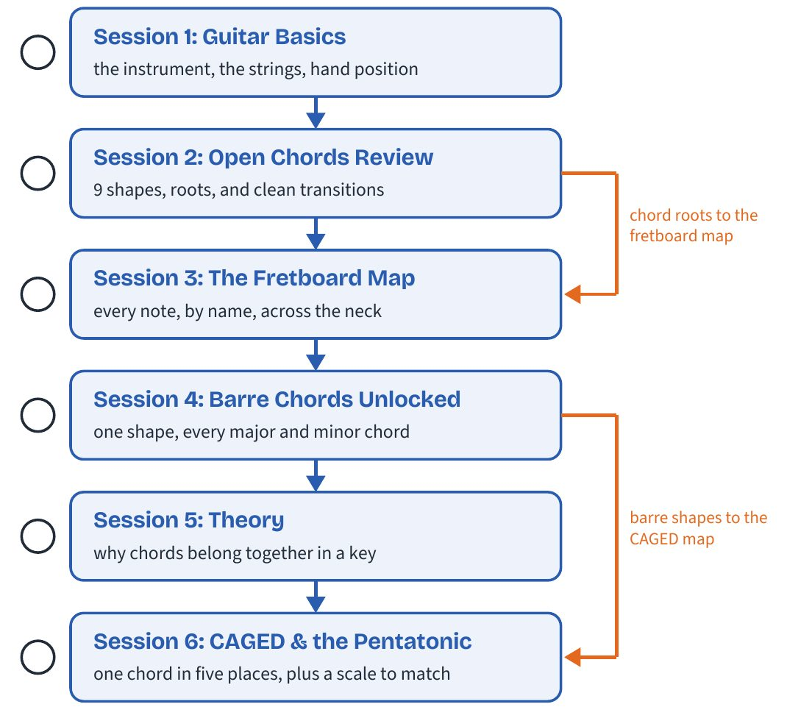
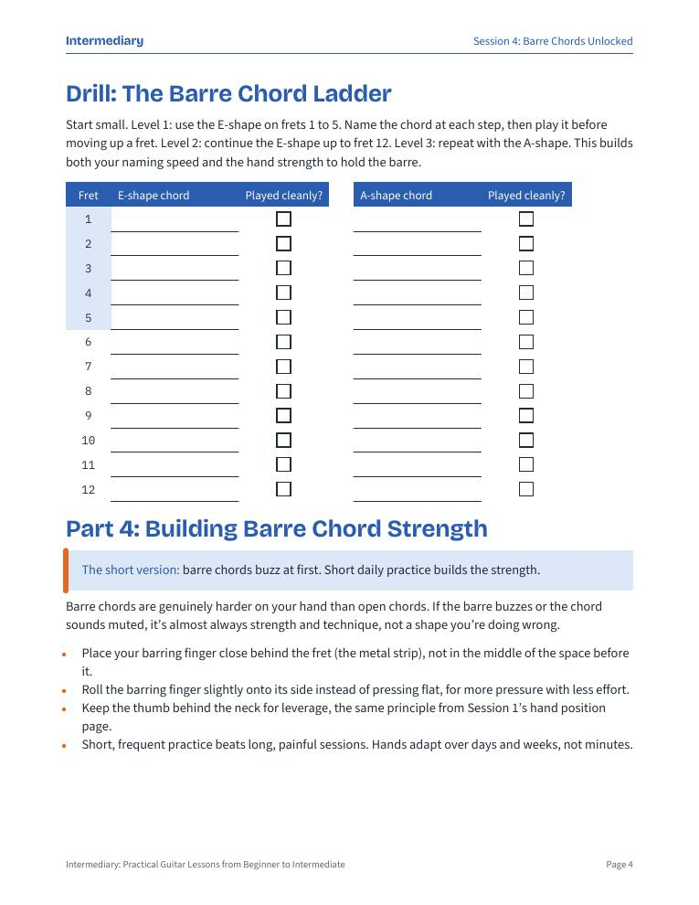

A clear path from open chords to intermediate
Six short sessions, in order. Each one uses what the last one taught you, so you never have to guess what to learn next.
-
Where you are now
You know some open chords and feel stuck
You can play along with a few songs. Barre chords hurt, the neck is a mystery, and theory sounds like another language.
-
Get your footing
Session 1: Guitar Basics
Name every part of the guitar, read the six strings in tab without mixing up top and bottom, and set up your hands comfortably.
-
Session 2: Open Chords Review
Know the root of each of the nine open chords, and practice clean changes between them.
-
Session 3: The Fretboard Map
Find any note on the first twelve frets, and see where each chord's root lives.
-
Unlock the neck
Session 4: Barre Chords Unlocked
Learn one shape that plays a different chord at every fret, in major and minor, and name each chord by the note under your finger.
-
Make it all connect
Session 5: Theory
Build the chords of a key from the major scale, and see the chord numbers that every key shares.
-
Session 6: CAGED and the Pentatonic
Learn your first scale as a box you can slide anywhere, and play the same chord in five places on the neck.
-
Where you are headed
Intermediate
You can find your way around the neck, play barre chords, and see why chords fit together, so new songs and lessons start to make sense.

Easy to follow, by design
Hard ideas get a plain-English explanation first, and the detail builds from there.
The short version comes first
Every page opens with one or two sentences that give you the idea. The detail follows.
New words are explained once
Each session starts with a plain-English box for any new terms, so nothing appears before it is explained.
Drills start easy
Rounds and levels let you begin small and add more when it feels comfortable.
Check your own work
Try each drill first, then use the answer keys at the back.

Who this is for
- You know a handful of open chords and want to move past them.
- You want to understand what you are playing, not just copy it.
- You like a clear sequence you can work through with a pencil.
- You teach guitar and want plain-English material for students.
Who it is not for
If you cannot yet play open chords, start with a beginner course first. The early sessions are a refresher, not a first lesson.
If you are already comfortable with barre chords, scales, and soloing, this will mostly be review.
Get a free lesson first
Download the first lesson from Session 4, One Shape, Every Major Chord, with its drill and answer key. It shows how every page in the workbook is built. No sign-up needed.
Get the workbook
- All six sessions, ready to print or fill in on a tablet
- Answer keys for every drill
- A map of the whole path and a 21-day practice streak chart
- Instant PDF download for US Letter and A4 from Etsy
Questions
What does intermediate mean here?
It means you are comfortable with open chords and ready to learn barre chords, the notes on the neck, and how chords fit together. It does not mean soloing or advanced technique.
Why is it called Intermediary?
An intermediary is a go-between. This workbook is the go-between for the beginner stage and the intermediate stage.
Do I need to read music?
No. Everything is done by counting frets and using the note names you learn in Session 3.
Is it for acoustic or electric guitar?
Both. The shapes and exercises are the same on either, and the guitar is assumed to be in standard tuning.
Is it for complete beginners?
Not quite. Sessions 1 and 2 are a refresher, so you should already know a few open chords. If you do not, a beginner course first will make this much easier.
How long does it take?
It is self-paced. Short, regular practice works better than long sessions, so a few minutes most days is plenty.
I am left-handed. Will it work?
Yes. The diagrams are drawn for right-handed players, and left-handed players use the same shapes with the hands mirrored.
What do I get after I buy?
You buy through Etsy and download the PDFs from your Etsy account (Purchases and Reviews), where they stay available. Because this is an instant digital download, Etsy does not accept returns, but if a file won't open or something is wrong, message me through Etsy or email support@pressware.co and I'll make it right.
Ready to take the next step?
Start with a free lesson, or get the whole path now.